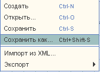
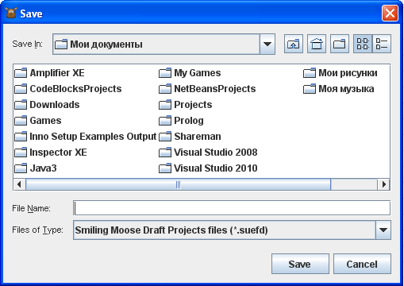
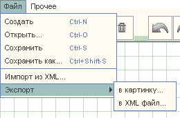

Сохранение в файл |
Данное приложение позволяет сохранять диаграммы в некоторых форматах. Ниже укажем список используемых форматов и их краткое описание. |
|
Меню:
|
|
|
Для сохранения в форматы .suef и .suefd необходимо выбрать:
, а затем в
диалоге выбрать директорию, имя и формат файла:
 |
|
| Для сохранения в xml файл или в png нужно воспользоваться:  |